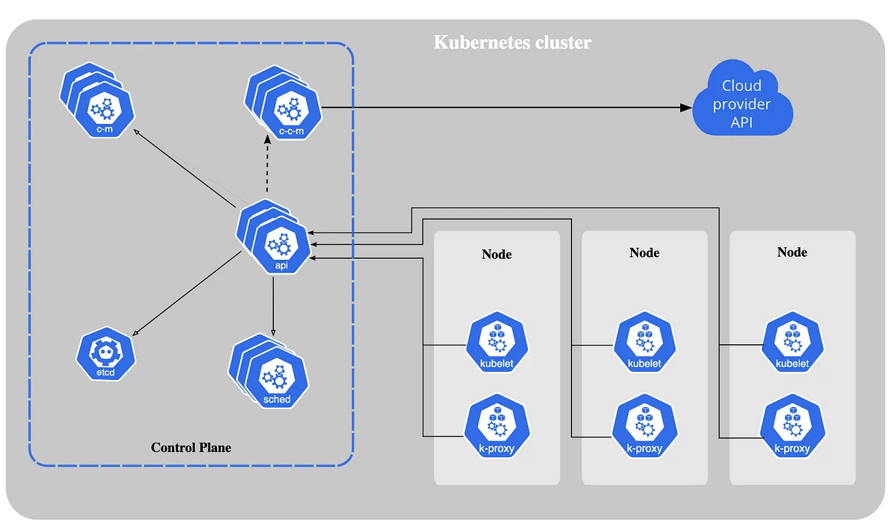
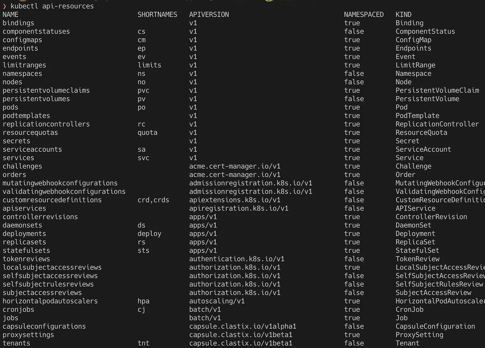
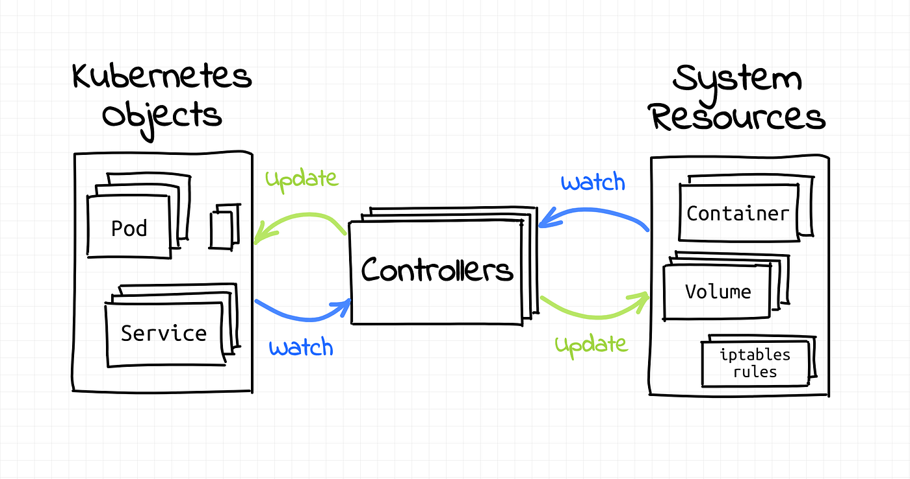
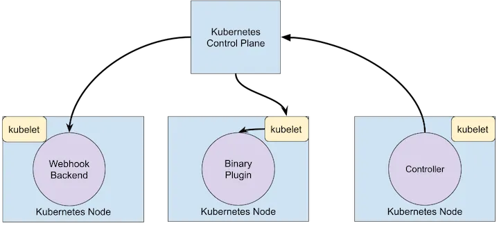
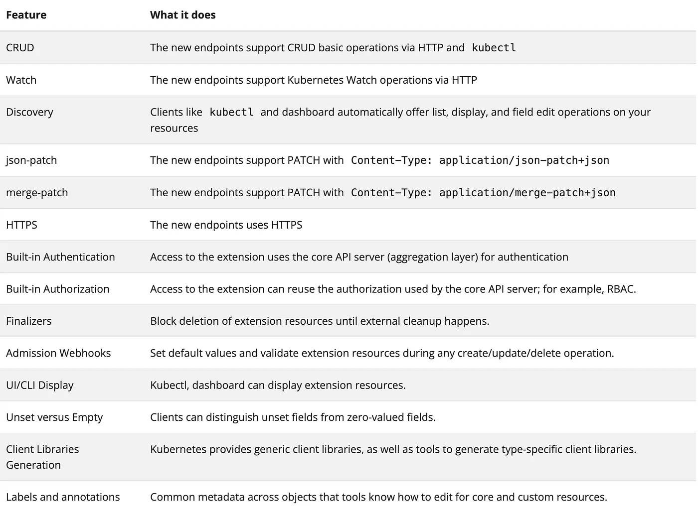

In this series of blog posts, I am going to talk about Kubernetes operator patterns, Kubernetes controllers, Custom resources, and many more related topics. We will also build a Kubernetes operator in Go and look at different tools available for building a Kubernetes operator.
What is Kubernetes? Link to heading
From the official documentation of Kubernetes
Kubernetes is a portable, extensible, open-source platform for managing containerized workloads and services, that facilitates both declarative configuration and automation. It has a large, rapidly growing ecosystem. Kubernetes services, support, and tools are widely available.
Some of the important Kubernetes features
- Automated rollouts and rollbacks
- Self Healing
- Service discovery and load balancing
- Designed for extensibility
…
Kubernetes is designed for extensibility and Kubernetes operators in one of the ways in which Kubernetes functionalities can be extended.
Before going into details of Kubernetes operators, let’s have look at features, components, and some of the core concepts of Kubernetes.
Kubernetes Components Link to heading
Kubernetes runs a set of components that makes the Kubernetes control plane.

[Source: Kubernetes Docs]
Kube APIServer Link to heading
The API server is a component of the Kubernetes control plane that exposes the Kubernetes API. The API server is the front end of the Kubernetes control plane.
Kube Controller Manager Link to heading
Control plane component that runs controller processes. Logically, each controller is a separate process, but to reduce complexity, they are all compiled into a single binary and run in a single process. For example: Job Controller Pod Controller Node Controller ..
Etcd Link to heading
Consistent and Highly available key-value store used backend storage for all cluster data.
Kube Scheduler Link to heading
Control plane component that watches for newly created Pods with no assigned node, and selects a node for them to run on
Cloud Controller Manager Link to heading
A Kubernetes control plane component that embeds cloud-specific control logic.
The API server is the heart of Kubernetes and every change in the state of the cluster happens through the API server. The API server exposes an HTTP API that lets end users, different parts of your cluster, and external components communicate with one another.
Kubernetes operator patterns and controllers heavily depend on the API server capabilities, so it is essential for us to familiarize ourselves with some of the basic design principles and concepts of the API server.
Kubernetes Concepts Link to heading
Objects: Link to heading
Kubernetes objects are persistent entities in the Kubernetes system. Kubernetes uses these entities to represent the state of your cluster. To perform any operations with the Kubernetes cluster, we either create/update/delete a Kubernetes object.
Resources: Link to heading
A resource is an endpoint in the Kubernetes API that stores a collection of API objects of a certain kind; for example, the built-in pod’s resource contains a collection of Pod objects.
You can always see the list of available resources in a Kubernetes cluster by running the below command.

Version: Link to heading
Kubernetes APIs are versioned. Kubernetes supports multiple API versions, each at a different API path, such as /api/v1 or /apis/rbac.authorization.k8s.io/v1beta1. The API server handles the conversion between API versions transparently.
Different API versions indicate different levels of stability and support.
For example,
- Alpha
- Beta
- Stable Find more about each version here
Group: Link to heading
API groups are used to organize Kubernetes objects of similar interests in modular groups. Group objects can have their own versions and can be enabled/disabled individually. The API group is specified in a REST path and in the apiVersion field of a serialized object.
API groups also make it easier to extend the Kubernetes API.
There are several API groups in Kubernetes:
-
The core (also called legacy) group is found at the REST path
/api/v1.The core group is not specified as part of the apiVersion field, for example,apiVersion: v1. -
The named groups are at the REST path
/apis/$GROUP_NAME/$VERSIONand useapiVersion: $GROUP_NAME/$VERSION(for example,apiVersion: rbac.authorization.k8s.io/v1).
You can also check the list of available API groups and their versions using kubectl api-versions command.
$ kubectl api-versions
acme.cert-manager.io/v1
admissionregistration.k8s.io/v1
admissionregistration.k8s.io/v1beta1
apiextensions.k8s.io/v1
apiextensions.k8s.io/v1beta1
apiregistration.k8s.io/v1
apiregistration.k8s.io/v1beta1
apps/v1
…
Kind: Link to heading
Kinds are divided into API groups and are versioned. Each Kubernetes object has a kind. For example, Pod, Node, Deployment, etc. It is specified using kind field of an object.
Desired and Current State: Link to heading
Kubernetes APIs are declarative. You declare the desired state of your resource. The Kubernetes controller keeps the current state of Kubernetes objects in sync with your declared desired state. This is in contrast to an imperative API, where you instruct a server what to do.
Almost every Kubernetes object includes two nested object fields that govern the object’s configuration: the object spec and the object status. For objects that have a spec, you have to set this when you create the object, providing a description of the characteristics you want the resource to have: its desired state.
The status describes the current state of the object, supplied and updated by the Kubernetes system and its components. The Kubernetes controllers continually and actively manages every object’s actual state to match the desired state you supplied.
For example,
- A Pod object has a list of containers in its
specand the Pod controller always tries to match its desired state by running that many containers for the Pod.
ConfigMap, Secret, ServiceAccount etc does not have
specfields.
Controllers and Control Loops Link to heading
Controllers are control loops that watch the state of your cluster, then make or request changes where needed. Each controller tries to move the current cluster state closer to the desired state.
A control loop is a non-terminating loop that regulates the state of a system.
Here is one example of a control loop: a thermostat in a room.
When you set the temperature, that’s telling the thermostat about your desired state. The actual room temperature is the current state. The thermostat acts to bring the current state closer to the desired state, by turning equipment on or off.
A controller tracks at least one Kubernetes resource type. These objects have a spec field that represents the desired state. The controller(s) for that resource is responsible for making the current state come closer to that desired state.

[Source: https://iximiuz.com/en/posts/kubernetes-operator-pattern/]
As a tenet of its design, Kubernetes uses lots of controllers that each manage a particular aspect of the cluster state. Most commonly, a particular control loop (controller) uses one kind of resource as its desired state and has a different kind of resource that manages to make that desired state happen. For example, a controller for Jobs tracks Job objects (to discover new work) and Pod objects (to run the Jobs, and then to see when the work is finished). In this case, something else creates the Jobs, whereas the Job controller creates Pods.
It’s useful to have simple controllers rather than one, monolithic set of control loops that are interlinked. Controllers can fail, so Kubernetes is designed to allow for that.
There can be several controllers that create or update the same kind of object. Behind the scenes, Kubernetes controllers make sure that they only pay attention to the resources linked to their controlling resource.
For example, you can have Deployments and Jobs; these both create Pods. The Job controller does not delete the Pods that your Deployment created, because there is information (labels) the controllers can use to tell those Pods apart.
Operators and Operator pattern Link to heading
Operators are software extensions to Kubernetes that make use of custom resources to manage applications and their components. Operators follow Kubernetes principles, notably the control loop.
The operator pattern aims to capture the key aim of a human operator who is managing a service or set of services. Human operators who look after specific applications and services have deep knowledge of how the system ought to behave, how to deploy it, and how to react if there are problems.
People who run workloads on Kubernetes often like to use automation to take care of repeatable tasks. The operator pattern captures how you can write code to automate a task beyond what Kubernetes itself provides.
For example, Cass Operator handles the lifecycle management of a Cassandra cluster on Kubernetes and automates all human operator tasks involves in managing a Cassandra cluster.
Kubernetes extensibility Link to heading
One of the major features of Kubernetes is extensibility. Kubernetes is highly configurable and extensible. There are different ways you can extend Kubernetes functionalities. For example,
- Adding a new resource (kind) in Kubernetes API using custom resources and controllers.
- Extend the Kubernetes Scheduler functionality using Scheduler Extensions.
- Network Plugins allow for different implementations of pod networking.
- New types of storage can be supported via Storage Plugins.
- Extend Authentication, Authorization, Dynamic Admission Control, etc using Webhooks extension point of Kubernetes API

Custom Resources Link to heading
A custom resource is an extension of the Kubernetes API that is not necessarily available in a default Kubernetes installation. It represents a customization of a particular Kubernetes installation. However, many core Kubernetes functions are now built using custom resources, making Kubernetes more modular.
Custom resources can appear and disappear in a running cluster through dynamic registration, and cluster admins can update custom resources independently of the cluster itself. Once a custom resource is installed, users can create and access its objects using kubectl, just as they do for built-in resources like Pods.
Custom resources are dynamically registered with a Kubernetes cluster using an API resource called CustomResourceDefinition. The CustomResourceDefinition API resource allows you to define custom resources. Defining a CRD object creates a new custom resource with a name and schema that you specify.
When you create a new CustomResourceDefinition (CRD), the Kubernetes API Server creates a new RESTful resource path for each version you specify. The custom resource created from a CRD object can be either namespaced or cluster-scoped, as specified in the CRD’s spec.scope
Custom controllers Link to heading
Custom resources let you store and retrieve structured data. When you combine a custom resource with a custom controller, custom resources provide a true declarative API.
You can deploy and update a custom controller on a running cluster, independently of the cluster’s lifecycle. Custom controllers can work with any kind of resource, but they are especially effective when combined with custom resources. The Operator pattern combines custom resources and custom controllers. You can use custom controllers to encode domain knowledge for specific applications into an extension of the Kubernetes API.
When you create a custom resource via CRD, you get many common features for your API automatically enabled compared to implementing it outside of the Kubernetes platform.

[Common Features of custom resources]
How to create a new API Custom Resource Type? Link to heading
Custom Resource types are created and managed like any other built-in types in Kubernetes. We can define the CustomResourceDefinition object for the custom resource type and apply it to the cluster.
For example, Custom Resource crontabs , the definition would look something like as below
Save this to a file crontabs.yaml
apiVersion: apiextensions.k8s.io/v1
kind: CustomResourceDefinition
metadata:
# name must match the spec fields below, and be in the form: <plural>.<group>
name: crontabs.stable.example.com
spec:
# group name to use for REST API: /apis/<group>/<version>
group: stable.example.com
# list of versions supported by this CustomResourceDefinition
versions:
- name: v1
# Each version can be enabled/disabled by Served flag.
served: true
# One and only one version must be marked as the storage version.
storage: true
schema:
openAPIV3Schema:
type: object
properties:
spec:
type: object
properties:
cronSpec:
type: string
image:
type: string
replicas:
type: integer
# either Namespaced or Cluster
scope: Namespaced
names:
# plural name to be used in the URL: /apis/<group>/<version>/<plural>
plural: crontabs
# singular name to be used as an alias on the CLI and for display
singular: crontab
# kind is normally the CamelCased singular type. Your resource manifests use this.
kind: CronTab
# shortNames allow shorter string to match your resource on the CLI
shortNames:
- ct
and you can create it:
kubectl apply -f crontabs.yaml
Then a new namespaced RESTful API endpoint is created at:
/apis/stable.example.com/v1/namespaces/*/crontabs/…
You can also create an instance of the crontab custom resource using kubectl. An example crontab resource
apiVersion: "stable.example.com/v1"
kind: CronTab
metadata:
name: my-new-cron-object
spec:
cronSpec: "* * * * */5"
image: my-awesome-cron-image
List crontab resources
kubectl get crontabs
The above is a very simple custom resource with only a few fields but in an actual operator, Kubernetes custom resource fields structure can get very complex and it would be very difficult to write the CRDs definition by hand.
Also, the above custom resources do not have a custom controller to reconcile to custom resource events. There is a lot that goes into writing custom controllers for custom resources.
In the next blog in this series, we will be looking at different options and tooling available for working with custom resources and custom controllers.